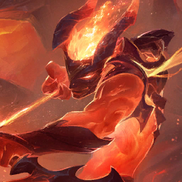
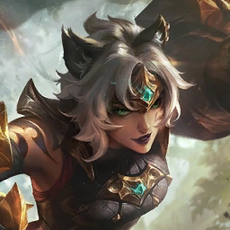
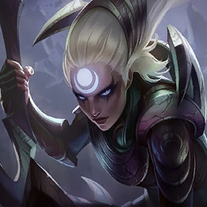
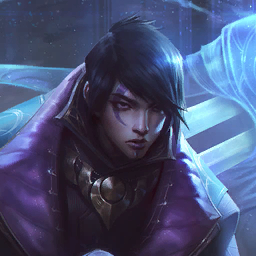
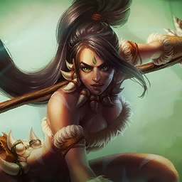
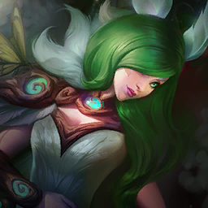
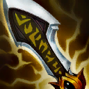

Cores
Tokens em OKLCH com par claro/escuro (light-dark()). Texto, traço e contorno usam --go etc.; fundos sólidos usam --go-fill com --on-fill por cima.
Tipografia
Espaço, raio e sombra
Botões
Uma ação principal sólida por tela (btn-solid); ações de apoio tingidas ou neutras; só ícone exige aria-label.
Chips, selos, pílulas e teclas
Retratos de campeão e item
O anel é a cor do custo (--ring-c). Sem imagem, o retrato mostra as iniciais. Imagens com width/height, loading="lazy" e decoding="async".







Dentro de uma frase: Aphelios (hoje 2★) recebe Infinity Edge. O nome fica só para leitor de tela.
Campos e controles
Cartões, foco e estados
Foco agora (exemplo estático)
Avisos da tela
Estados vazio e erro
Nenhuma partida para analisar
Quando o TFT gravar o primeiro tabuleiro, as decisões aparecem aqui.
Sem leitura do servidor
A análise continua nele; a tela volta sozinha.
Carregando
Tabela
| Item | Média | Top 4 | Tier |
|---|---|---|---|
| Infinity Edge | 4,12 | 58,3% | S |
| 4,31 | 54,0% | A |
Diálogo
<dialog class="dlg"> com showModal(): foco preso, Esc e fundo inerte nativos; abaixo de 640 px vira folha embaixo.
Dica e aviso temporário
No app, qualquer elemento com title="…" ganha esta dica (hover, foco por teclado e toque longo; Esc fecha). O aviso temporário (shell.toast) tem ação opcional; use shell.announce para leitores de tela.
Na loja: compre 1 (#3)